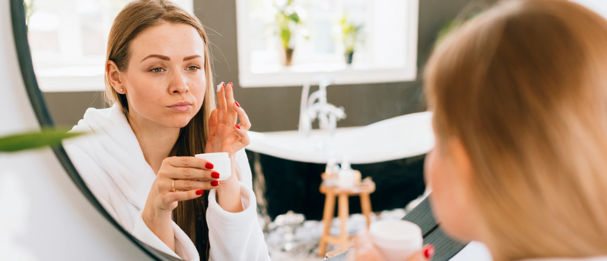
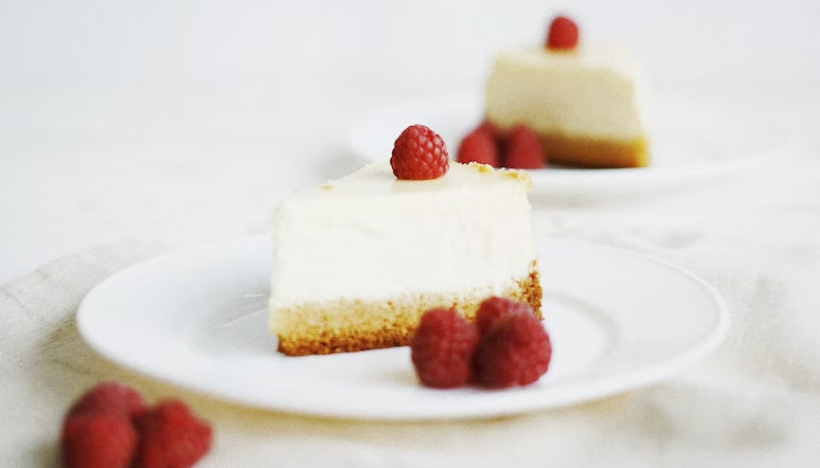

Метрогил ®
Метрогил / Блог / Популярные мифы про акне: диета, советы и врачи
Популярные мифы про акне: диета, советы и врачи

11.12.2022

1 034

5 мин

Существует популярная теория, что определенные продукты провоцируют акне.
Блогеры на своем примере показывают, что нужно и не нужно есть, а в интернете полно статей с противоречивой информацией.
Так стоит ли отказываться от молочного и сладкого из-за угрей? Кого слушать?
Давайте разберемся со всем по порядку.
Миф 1.
Диета необходима для лечения акне
Большое упрощение – считать пищу источником такого заболевания, как акне.
Природа угрей очень сложная и зависит от многих факторов, таких как генетика и гормональный фон.
И все-таки хорошее питание важно. Еда способствует как здоровью, так и нездоровью кожи.
Но правильно питаться – означает придерживаться постоянных правил в течение длительного времени.
Несколько конфет или кусок торта на праздник, скорее всего, не сделают хуже вашей коже, если не питаться ими постоянно.
Миф 2.
Существуюет универсальные советы для лечения акне
К сожалению, это совсем не так. Если что-то помогает одному при акне, то совершенно необязательно оно поможет другому.
У каждого из нас свояй ДНК и уникальный кишечный и кожный микробиом.
По этой простой причине не стоит испытывать на себе все советы из интернета или отчаиваться, узнав, что кому-то не помогло то, чем лечат вас.
Но верно и обратное: не беритесь советовать другим, как им лечиться и питаться при акне, даже если это помогло вам.
Для лечения всех форм акне назначают адапален 0, 1 %. Он входит в состав средства Метрогил® А для лечения угревой сыпи и комедонов.
Метрогил® А снимает воспаление, удаляет комедоны и нормализует выработку кожных жиров. Попробуйте сами, чтобы узнать, как это поможет вам.
Миф 3.
При акне нельзя есть сладости
Отчасти сахар действительно играет роль в возникновении акне.
Существует взаимосвязь развития акне и пищи с высоким гликемическим индексом.
Это скорость, с которой содержащиеся в продукте углеводы усваиваются организмом и повышают уровень сахара в крови.
Однако нельзя исключать сахар из рациона полностью.
Он полезен для мозга, нужно лишь потреблять сахар в разумных количествах и хорошего качества.

Миф 4.
Молочные продукты вызывают угри
Взаимосвязь акне с молочными продуктами слабая. Они могут играть роль в возникновении угрей, но только у маленькой группы людей!
Вы уверены, что принадлежите к ней?
В Британии и США специалисты не рекомендуют отказываться от молочных продуктов для лечения акне.
Миф 5.
Акне лечит только дерматолог или косметолог
Акне уже связали с психическими проблемами – беспокойством, депрессией, общественной изоляцией и чувством стеснения своего тела.
Обратитесь к диетологу и психологу, если:
- Вас приводит в отчаяние то, как выглядит ваше лицо
- Если из-за акне у вас упала самооценка
- Вы отказываетесь от досуга из-за стеснения
- Вы категорически отказываетесь употреблять те или иные продукты
Информация проверена экспертом
Хисматуллина И.М
дерматолог, венеролог
Литература:
Анджали Махто, дерматолог (статья с сайта Refinery 29) https://www.bbc.com/russian/vert-fut-46137964
Nobukazu HAYASHI, Hirohiko AKAMATSU. Japanese Dermatological Association Guidelines: Guidelines for the treatment of acne vulgaris 2017. Journal of Dermatology 2018, 11-12, 16.
Millikan L.E. Pivotal clinical trials of adapalene in the treatment of acne J Eur Acad Dermatol Venereol 2001; 15 (Suppl 3): 19–22.
Waugh J., Noble S., Scott L.J. et al. Adapalene: a review of its use in the treatment of acne vulgaris. Drugs 2004; 64 (13): 1465–1478.
Lucky A., Jorizzo J.L., Rodriguez D. et al. Efficacy and tolerance of adapalene cream 0,.1% compared with its cream vehicle for the treatment of acne vulgaris. Cutis 2001; 68: 34–40.
Cunliffe W.J. Caputo R., Dreno B. et al. Clinical efficacy and safety comparison of adapalene gel and tretinoin gel in the treatment of acne vulgaris: Europe and U.S. multicenter trials. J Am Acad Dermatol 1997; 36 (6Pt2): S126–134.
of adapalene gel 0,1% and tretinoin cream 0,05% in patients with acne vulgaris. Eur J Dermatol 2002; 12: 350–354.
Thiboutot D.M., Shalita A.R., Yamauchi P.S. et al. Adapalene gel, 0.1%, as maintenance therapy for acne vulgaris: a randomized, controlled, investigator-blind follow-up of a recent combination study. Arch Dermatol 2006; 142 (5): 597–602.
Cook-Bolden F. Subject Preferences for acne treatments containing adapalene gel 0,.1%: results of the MORE trial. Cutis 2006; 78 (1 Suppl): 26–33.
Gold L.S. The MORE trial: effectiveness of adapalene gel 0,.1% in real-world dermatology practices. Cutis 2006; 78 (1 Suppl): 12–18.
Gollnick H.P., Graupe K., Zaumseil R.P. [Azelaic acid 15% gel in the treatment of acne vulgaris. Combined results of two double-blind clinical comparative studies. J Dtsch Dermatol Ges 2004; 2: 841–847.
Вас может заинтересовать

здоровье
К какому врачу обратиться с подозрением на розацеа?

психология
«Не хочу смотреть на себя в зеркало» или как справиться с акне

здоровье
Может ли диета помочь при розацеа

КИНО
3 героини с «дефектами» внешности